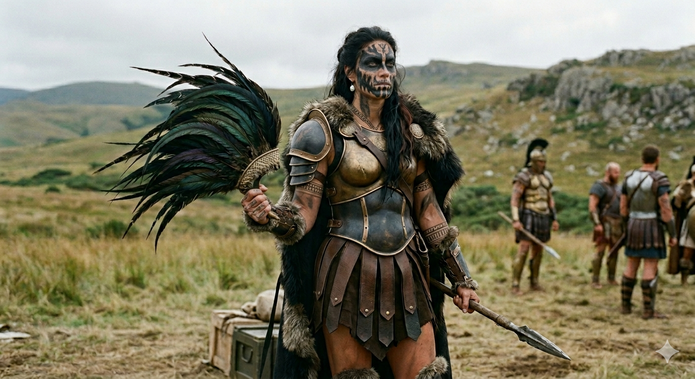

The Lost Prince — Character Encyclopedia
House Rhill · Province of Rhill
Khlora
Rhill
The Matriarch · The Rebuilt · The Council Seat
Matriarch of House Rhill
Age 288
Council Seat — 138 years
Wed to Roven Navori
She did not expect the seat. The seat fell to her through devastation. She has held it for one hundred and thirty-eight years, and she has never put it down.
Made Matriarch
~150 yrs old · Through Loss
Surviving Children
8 · After Burying 3
Council Voice
Province of Rhill · Seat 9
◆ ◆ ◆
I.Personality
The composure underneath.
Khlora is not warm in the way other Matriarchs are warm. She is steady. She is exact. She rebuilt her family child by child after the war took three of them, and she did not perform the grief any louder than she performed the work. The two are the same to her. The one became the other.
She does not dominate rooms. She enters them and the room composes itself around her without being asked to. The voice she uses in council is the same voice she uses on the drill field — measured, low, never raised. She has not needed to raise it in over a century. Anyone who has heard her shift register knows what is coming, and corrects course before she has to make her point twice.
She carries her dead privately. The three children lost in the war are not named in public — not because the house forbids it, but because she has never offered. The house follows her on this. It will not break the silence first.
◆ ◆ ◆
II.The Council Seat
Inherited through devastation.
Khlora was not raised to be Matriarch. The role fell to her through what the Hadean War left behind. When the war ended she was approximately two hundred years old, the eldest and strongest Rhill remaining, and the line had been gutted. The seat passed to her not by ceremony but by absence — there was no one else to hold it.
Pre-War
Born ~288 years before Chronicle One. Came of age inside a House Rhill that still expected continuity. The seat was held by elders. Khlora was a daughter of the line, not a contender.
The War
She was approximately 200 when the war ended. She lost three children. She lost most of the rest of her line. The Rhill survived because of their northern position and a handful of strongholds — survival, not victory.
~150 Years Old
She became Matriarch. The line had collapsed around her. There was no opposition because there was almost no one left.
Now
288 years old. 138 years on the council. Voting seat for the Province of Rhill — one of ten beneath the King.
She and Titano Rue inherited their seats the same way. Two people who came into power because everyone above them died. They share that. They have never spoken about it openly. They do not need to. Their joint military drills — public, official, regional necessity on paper — are also the only sustained time either of them spends with someone who fully understands the path. Their bond is not friendship in the social sense. It is recognition.
◆ ◆ ◆

Formal · State Event
Emerald, fur, the cascade of metal across her hair. The Matriarch composed for the kingdom's eye.

Battle · The Field
Earth tones, bronze, peacock-iridescent feather fan, war paint dense across the face. Rank carried in detail. Behind her, the Rhill formed up and waiting.

The Rhill Core
Khlora flanked by Roven and Koran at a state evening. Her hand on her son's shoulder. Her husband beside her. The house composed in public.
◆ ◆ ◆
Roven Navori
Husband · Same War · The Constant
Forty-one years older than her on paper, peer in every way that matters. He survived the war beside her and rebuilt the house beside her. He has never tried to lead it. He has never receded into the background of it either. The province is hers. Roven is the man she comes home to at the end of council days, and she comes home to him without performing exhaustion.
Titano Rue
Neighbor · Joint Command · Inherited Devastation
The shared river border is the official explanation. The truth is older. Both inherited their seats through devastation. She didn't lose everything the way he did, but she lost enough to meet him there without pretending to match it. Their joint drills are the only time either of them spends with someone who fully understands.
Khloe Rhill
Eldest Daughter · Named in Khlora's Image
The firstborn who lived. Named in the war years, the K-cluster sound mirroring her mother's name — a deliberate echo. Khloe carries something the post-war daughters never will. Khlora knows it. So does Khloe.
Kole Navori
Only Surviving Son · Pre-War
She lost a son in the war and kept one. She does not show preference and she does not need to. Kole knows what he came back through. So does she.
Koran Navori
Youngest Son · The Late Gift · Rebirth-Era
Fifteen years old. Born around the time of the Rebirth, when many across the world brought new life into being to honor the cosmic event. Koran is not loved more than the others. He is loved differently. The space between him and his nearest sibling is nearly sixty years, and Khlora has never tried to close it. The space is part of him.
The Lost Three
Two Daughters and a Son · The War
She has not named them publicly. The province has not asked her to. Their absence shapes everything she has built since — but she does not perform the grief, and she does not put their faces in the public record. They are hers.